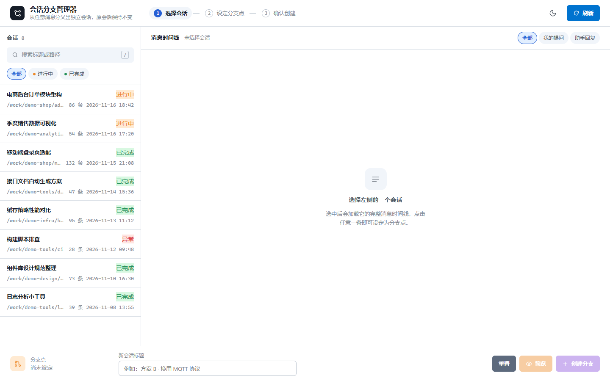
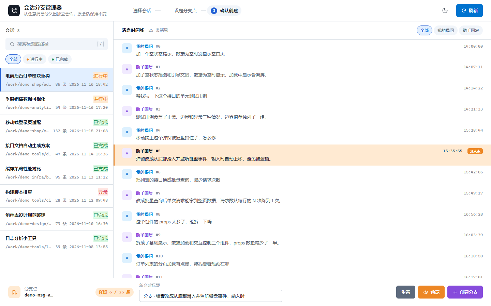
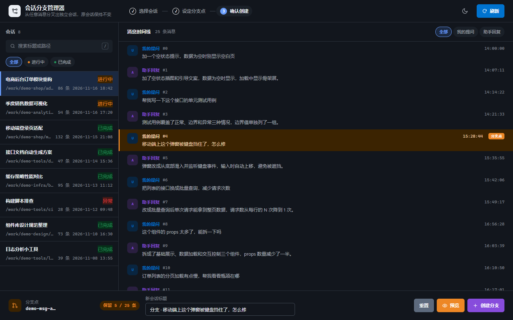

WorkBuddy 对话进行到一半想换方向？从中间任意一条消息复制出独立会话，原会话完整保留，两条线随时切换。全程本地处理。
两个版本功能完全一致，仅分发形式不同。
WorkBuddy 没有 Branch 按钮，内置的回退会覆盖当前对话。这个工具给你真正的选择。
选会话、点分支点、确认创建，进度清晰可见。
选中分支点当场显示保留条数，无需等待预览。
国内版与国际版数据目录一键切换，互不干扰。
只读写本机数据，不联网、不上传任何内容。
以下截图来自虚构演示数据，不含任何真实用户信息。


